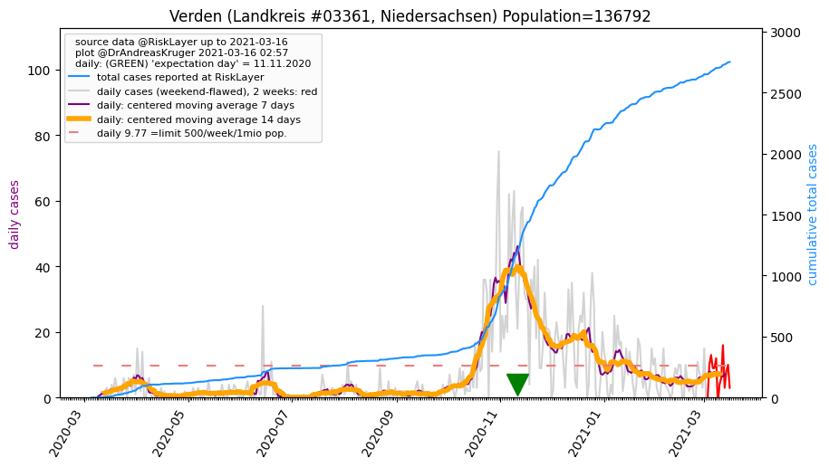
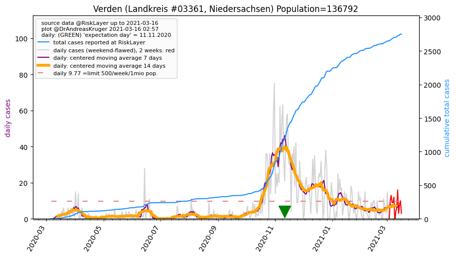

")
_LK (32.1 km)")
")
")
")
_LK (40.7 km)")
")
| Verden_LK (0.0 km)  |
Bremen_KS (31.1 km) |
Rotenburg (Wümme)_LK (32.1 km) |
| Delmenhorst_KS (36.6 km) |
Osterholz_LK (39.5 km) |
Heidekreis_LK (40.2 km) |
| Nienburg (Weser)_LK (40.7 km) |
Diepholz_LK (42.0 km) |
All plots are regenerated with new data every night. Beware this temporary hotspot is an experimental page - it might get removed, so please do not link to it. Instead link to project http://tiny.cc/cov19de.